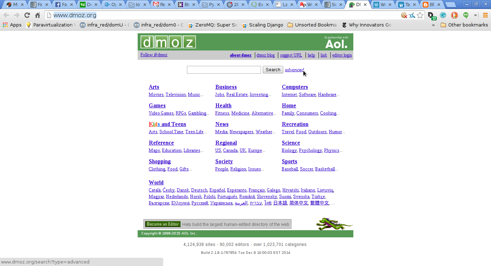

Extracción de datos de páginas web con scrapy
Posted on jue 01 enero 2015 in Tutorial Python • 6 min read
En artículos anteriores se ha tocado el tema de webscraping, ahora se usará el framework scrapy que permite automatizar la extracción de los datos.
Scrapy es un framework para el rastreo y extraccion de datos estructurados de páginas web. Los datos pueden ser usados para data mining, procesamiento de datos o historicos de información.
Este artículo se basa del tutorial en inglés de la página del proyecto.
Para la instalación de scrapy se tiene un paquete deb a lo Debian:
#apt-get install python-scrapy
O usando pip:
#pip install scrapy
La idea es extraer datos de la página de dmoz.
Este tutorial sigue el siguiente procedimiento:
- Crear el proyecto.
- Definir los items que se van a extraer de la página.
- Escriibr el spider para navegar por un sitio y extraer los items.
- Escribir el pineline para almacenar los datos extraídos.
A continuación se muestra una captura de pantalla del sitio:

Lo primero que se hace es crear un proyecto:
$scrapy startproject dmoz
New Scrapy project 'dmoz' created in:
/home/ernesto/proyectos/scrapy/dmoz
You can start your first spider with:
cd dmoz
scrapy genspider example example.com
Esto crea un directorio dmoz con el siguiente contenido:
dmoz/
├── dmoz
│ ├── __init__.py
│ ├── items.py
│ ├── pipelines.py
│ ├── settings.py
│ └── spiders
│ └── __init__.py
└── scrapy.cfg
Descripción de los archivos:
- scrapy.cfg: Configuración del proyecto
- dmoz/ : módulo python de nuestro proyecto, ahí se incluirá el código del proyecto.
- dmoz/items.py: Archivo donde se definen los items que se quiere extraer.
- dmoz/settings.py: Archivo de ajustes del proyecto.
- dmoz/pipelines.py: Se definen los flujos del proyecto.
- dmoz/spider/ : Directorio donde se colocara el código de la araña para extraer datos.
Definir el Item (dmoz/items.py):
Este archivo debe contener lo siguiente:
# -*- coding: utf-8 -*-
import scrapy
from scrapy import Item,Field
class DmozItem(Item):
title = Field()
link = Field()
desc = Field()
Se define la clase DmozItem que hereda de Item, se tiene title, link y desc instancias de Field que son los items a extraer de la página web.
Creación del spider. Las arañas son clases escritas por el usuario para extraer datos de una página web o dominio o grupos de dominios.
Antes de crear el archivo dmoz_spider.py se hablara de los selectores.
Hay varias maneras de extraer datos de páginas web, scrapy usa XPath o expresiones CSS llamadas scrapy selectors. La documentación la pueden encontrar en el siguiente enlace.
A continuación una lista de expresiones XPath y su significado:
/html/head/title: Selecciona el elemento title de head./html/head/title/text(): Selecciona el texto del elemento title.//td: Selecciona todos los elementos de td.//div[@class="mine"]: Selecciona todos los elementos div que contengan el atributo class="mine".
Los selectores tienen 4 métodos:
- xpath(): Retorna una lista de selectores, cada uno de ellos representa los nodos por la expresión de xpath pasada como argumento.
- css(): Retorna una lista de selectores, cada uno representa los nodos seleccionados por la expresión de css() pasada como argumento.
- extract(): Retorna un string (unicode) con el dato seleccionado.
- re(): Retorna una lista de string extraídos al aplicar una expresión regular pasada como argumento.
Probar selectores desde el shell de scrapy: Está es una forma de evaluar los selectores XPath, lo que se le pasará al shell de scrapy es el url de la página que se quiere evaluar.
scrapy shell "http://www.dmoz.org/Computers/Programming/Languages/Python/Books/"
2015-01-01 21:07:43-0430 [scrapy] INFO: Scrapy 0.24.2 started (bot: scrapybot)
2015-01-01 21:07:43-0430 [scrapy] INFO: Optional features available: ssl, http11, boto, django
2015-01-01 21:07:43-0430 [scrapy] INFO: Overridden settings: {'LOGSTATS_INTERVAL': 0}
2015-01-01 21:07:43-0430 [scrapy] INFO: Enabled extensions: TelnetConsole, CloseSpider, WebService, CoreStats, SpiderState
2015-01-01 21:07:45-0430 [scrapy] INFO: Enabled downloader middlewares: HttpAuthMiddleware, DownloadTimeoutMiddleware, UserAgentMiddleware, RetryMiddleware, DefaultHeadersMiddleware, MetaRefreshMiddleware, HttpCompressionMiddleware, RedirectMiddleware, CookiesMiddleware, ChunkedTransferMiddleware, DownloaderStats
2015-01-01 21:07:45-0430 [scrapy] INFO: Enabled spider middlewares: HttpErrorMiddleware, OffsiteMiddleware, RefererMiddleware, UrlLengthMiddleware, DepthMiddleware
2015-01-01 21:07:45-0430 [scrapy] INFO: Enabled item pipelines:
2015-01-01 21:07:45-0430 [scrapy] DEBUG: Telnet console listening on 127.0.0.1:6024
2015-01-01 21:07:45-0430 [scrapy] DEBUG: Web service listening on 127.0.0.1:6081
2015-01-01 21:07:45-0430 [default] INFO: Spider opened
2015-01-01 21:07:45-0430 [default] DEBUG: Crawled (200) <GET http://www.dmoz.org/Computers/Programming/Languages/Python/Books/> (referer: None)
[s] Available Scrapy objects:
[s] crawler <scrapy.crawler.Crawler object at 0x7f5e0a286250>
[s] item {}
[s] request <GET http://www.dmoz.org/Computers/Programming/Languages/Python/Books/>
[s] response <200 http://www.dmoz.org/Computers/Programming/Languages/Python/Books/>
[s] settings <scrapy.settings.Settings object at 0x7f5e0aaa0f50>
[s] spider <Spider 'default' at 0x7f5e09c94690>
[s] Useful shortcuts:
[s] shelp() Shell help (print this help)
[s] fetch(req_or_url) Fetch request (or URL) and update local objects
[s] view(response) View response in a browser
In [1]:
Ya acá se puede iniciar la evaluación:
In [1]: response.xpath('//title')
Out[1]: [<Selector xpath='//title' data=u'<title>DMOZ - Computers: Programming: La'>]
In [2]: response.xpath('//title').extract()
Out[2]: [u'<title>DMOZ - Computers: Programming: Languages: Python: Books</title>']
In [3]: response.xpath('//title/text()')
Out[3]: [<Selector xpath='//title/text()' data=u'DMOZ - Computers: Programming: Languages'>]
In [4]: response.xpath('//title/text()').extract()
Out[4]: [u'DMOZ - Computers: Programming: Languages: Python: Books']
In [5]: response.xpath('//title/text()').re('(\w+):')
Out[5]: [u'Computers', u'Programming', u'Languages', u'Python']
Ahora a probar un caso real, la extracción de información de la página en elementos ul, li , se extrae su texto.
In [10]: sel.xpath('//ul/li/a/text()').extract()
Out[10]:
[u'Top',
u'Computers',
u'Programming',
u'Languages',
u'Python',
u'Computers: Programming: Languages: Python: Resources',
u'Computers: Programming: Languages: Ruby: Books',
u'Deutsch',
u'\u0420\u0443\u0441\u0441\u043a\u0438\u0439',
u'Core Python Programming',
u'Data Structures and Algorithms with Object-Oriented Design Patterns in Python',
u'Dive Into Python 3',
u'Foundations of Python Network Programming',
u'Free Python books',
u'FreeTechBooks: Python Scripting Language',
u'How to Think Like a Computer Scientist: Learning with Python',
u'An Introduction to Python',
u'Learn to Program Using Python',
u'Making Use of Python',
u'Practical Python',
u'Pro Python System Administration',
u'Programming in Python 3 (Second Edition)',
u'Python 2.1 Bible',
u'Python 3 Object Oriented Programming',
u'Python Language Reference Manual',
u'Python Programming Patterns',
u'Python Programming with the Java Class Libraries: A Tutorial for Building Web and Enterprise Applications with Jython',
u'Python: Visual QuickStart Guide',
u'Sams Teach Yourself Python in 24 Hours',
u'Text Processing in Python',
u'XML Processing with Python']
Y ahora se extraen los enlaces:
In [11]: sel.xpath('//ul/li/a/@href').extract()
Out[11]:
[u'/',
u'/Computers/',
u'/Computers/Programming/',
u'/Computers/Programming/Languages/',
u'/Computers/Programming/Languages/Python/',
u'/Computers/Programming/Languages/Python/Resources/',
u'/Computers/Programming/Languages/Ruby/Books/',
u'/World/Deutsch/Computer/Programmieren/Sprachen/Python/B%C3%BCcher',
u'/World/Russian/%D0%9A%D0%BE%D0%BC%D0%BF%D1%8C%D1%8E%D1%82%D0%B5%D1%80%D1%8B/%D0%9F%D1%80%D0%BE%D0%B3%D1%80%D0%B0%D0%BC%D0%BC%D0%B8%D1%80%D0%BE%D0%B2%D0%B0%D0%BD%D0%B8%D0%B5/%D0%AF%D0%B7%D1%8B%D0%BA%D0%B8/Python/%D0%9A%D0%BD%D0%B8%D0%B3%D0%B8',
u'http://www.pearsonhighered.com/educator/academic/product/0,,0130260363,00%2Ben-USS_01DBC.html',
u'http://www.brpreiss.com/books/opus7/html/book.html',
u'http://www.diveintopython.net/',
u'http://rhodesmill.org/brandon/2011/foundations-of-python-network-programming/',
u'http://www.techbooksforfree.com/perlpython.shtml',
u'http://www.freetechbooks.com/python-f6.html',
u'http://greenteapress.com/thinkpython/',
u'http://www.network-theory.co.uk/python/intro/',
u'http://www.freenetpages.co.uk/hp/alan.gauld/',
u'http://www.wiley.com/WileyCDA/WileyTitle/productCd-0471219754.html',
u'http://hetland.org/writing/practical-python/',
u'http://sysadminpy.com/',
u'http://www.qtrac.eu/py3book.html',
u'http://www.wiley.com/WileyCDA/WileyTitle/productCd-0764548077.html',
u'https://www.packtpub.com/python-3-object-oriented-programming/book',
u'http://www.network-theory.co.uk/python/language/',
u'http://www.pearsonhighered.com/educator/academic/product/0,,0130409561,00%2Ben-USS_01DBC.html',
u'http://www.informit.com/store/product.aspx?isbn=0201616165&redir=1',
u'http://www.pearsonhighered.com/educator/academic/product/0,,0201748843,00%2Ben-USS_01DBC.html',
u'http://www.informit.com/store/product.aspx?isbn=0672317354',
u'http://gnosis.cx/TPiP/',
u'http://www.informit.com/store/product.aspx?isbn=0130211192']
Modificar el archivo dmoz_spider.py:
# -*- coding: utf-8 -*-
import scrapy
#Se importa la clase DmozItem
from dmoz.items import DmozItem
#Se crea la clase DmozSpider que hereda de scapySpider .
class DmozSpider(scrapy.Spider):
#Se define el nombre del proyecto
name = 'dmoz'
#El proyecto al cual está permitido
allowed_domains = ['dmoz.org']
#Se define las urls a extraer datos
start_urls = ["http://www.dmoz.org/Computers/Programming/Languages/Python/Books/",
"http://www.dmoz.org/Computers/Programming/Languages/Python/Resources/"
]
#Se crea el método parse_item el cual define la extracción de los datos por medio de los
#items usando los selectores que se evaluaron.
def parse_item(self, response):
for sel in response.xpath('//ul/li'):
item = DmozItem()
item['title'] = sel.xpath('a/text()').extract()
item['link'] = sel.xpath('a/@href').extract()
item['desc'] = sel.xpath('text()').extract()
yield item
Ahora se ejecuta la extracción de datos:
scrapy crawl dmoz -o items.json
2015-01-01 21:35:54-0430 [scrapy] INFO: Scrapy 0.24.2 started (bot: dmoz)
2015-01-01 21:35:54-0430 [scrapy] INFO: Optional features available: ssl, http11, boto, django
2015-01-01 21:35:54-0430 [scrapy] INFO: Overridden settings: {'NEWSPIDER_MODULE': 'dmoz.spiders', 'FEED_FORMAT': 'json', 'SPIDER_MODULES': ['dmoz.spiders'], 'FEED_URI': 'items.json', 'BOT_NAME': 'dmoz'}
2015-01-01 21:35:54-0430 [scrapy] INFO: Enabled extensions: FeedExporter, LogStats, TelnetConsole, CloseSpider, WebService, CoreStats, SpiderState
2015-01-01 21:35:55-0430 [scrapy] INFO: Enabled downloader middlewares: HttpAuthMiddleware, DownloadTimeoutMiddleware, UserAgentMiddleware, RetryMiddleware, DefaultHeadersMiddleware, MetaRefreshMiddleware, HttpCompressionMiddleware, RedirectMiddleware, CookiesMiddleware, ChunkedTransferMiddleware, DownloaderStats
2015-01-01 21:35:55-0430 [scrapy] INFO: Enabled spider middlewares: HttpErrorMiddleware, OffsiteMiddleware, RefererMiddleware, UrlLengthMiddleware, DepthMiddleware
2015-01-01 21:35:55-0430 [scrapy] INFO: Enabled item pipelines:
2015-01-01 21:35:55-0430 [dmoz] INFO: Spider opened
2015-01-01 21:35:55-0430 [dmoz] INFO: Crawled 0 pages (at 0 pages/min), scraped 0 items (at 0 items/min)
2015-01-01 21:35:55-0430 [scrapy] DEBUG: Telnet console listening on 127.0.0.1:6024
2015-01-01 21:35:55-0430 [scrapy] DEBUG: Web service listening on 127.0.0.1:6081
2015-01-01 21:35:56-0430 [dmoz] DEBUG: Crawled (200) <GET http://www.dmoz.org/Computers/Programming/Languages/Python/Resources/> (referer: None)
2015-01-01 21:35:56-0430 [dmoz] DEBUG: Crawled (200) <GET http://www.dmoz.org/Computers/Programming/Languages/Python/Books/> (referer: None)
2015-01-01 21:35:56-0430 [dmoz] INFO: Closing spider (finished)
2015-01-01 21:35:56-0430 [dmoz] INFO: Dumping Scrapy stats:
{'downloader/request_bytes': 516,
'downloader/request_count': 2,
'downloader/request_method_count/GET': 2,
'downloader/response_bytes': 16342,
'downloader/response_count': 2,
'downloader/response_status_count/200': 2,
'finish_reason': 'finished',
'finish_time': datetime.datetime(2015, 1, 2, 2, 5, 56, 398479),
'log_count/DEBUG': 4,
'log_count/INFO': 7,
'response_received_count': 2,
'scheduler/dequeued': 2,
'scheduler/dequeued/memory': 2,
'scheduler/enqueued': 2,
'scheduler/enqueued/memory': 2,
'start_time': datetime.datetime(2015, 1, 2, 2, 5, 55, 814884)}
2015-01-01 21:35:56-0430 [dmoz] INFO: Spider closed (finished)
El archivo items.json contiene algo como lo siguiente:
[{"desc": ["\r\n\r\n "], "link": ["/"], "title": ["Top"]},
{"desc": [], "link": ["/Computers/"], "title": ["Computers"]},
{"desc": [], "link": ["/Computers/Programming/"], "title": ["Programming"]},
{"desc": [], "link": ["/Computers/Programming/Languages/"], "title": ["Languages"]},
{"desc": [], "link": ["/Computers/Programming/Languages/Python/"], "title": ["Python"]},
¡Haz tu donativo! Si te gustó el artículo puedes realizar un donativo con Bitcoin (BTC) usando la billetera digital de tu preferencia a la siguiente dirección: 17MtNybhdkA9GV3UNS6BTwPcuhjXoPrSzV
O Escaneando el código QR desde la billetera: